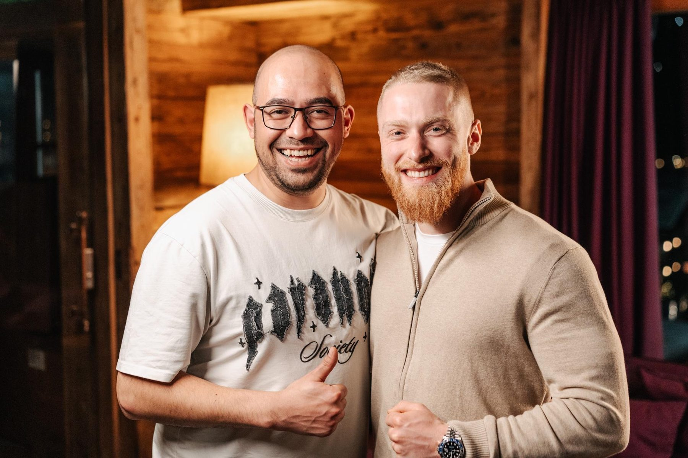
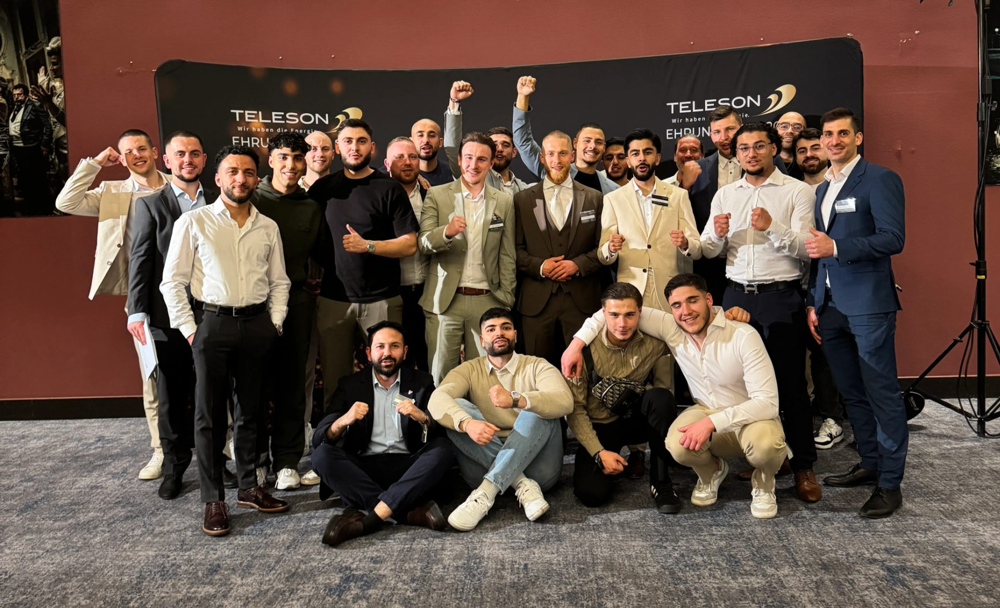

Die Möglichkeit
Baue dir ein Einkommen von 10.000 € und mehr im Monat auf.
Hohes Einkommenspotential
Pro vermitteltem Energievertrag sind Provisionen zwischen 80 und 200 Euro möglich.
Bei 50 bis 100 Verträgen im Monat lässt sich schnell erkennen, welches Potenzial dahintersteckt. So sind bereits durch die eigene Leistung fünfstellige Monatsumsätze möglich.
Wie weit es darüber hinausgeht, hängt von den eigenen Ergebnissen ab. Eine feste Grenze nach oben gibt es dabei nicht.

Ein Produkt das jeder braucht
Jeder Haushalt in Deutschland nutzt Strom / Gas und bezahlt bereits dafür.
Die Frage ist also nicht, ob jemand das Produkt braucht, sondern bei welchem Anbieter und zu welchem Preis er seine Energie bezieht.
Viele Menschen haben ihren Energieanbieter noch nie oder seit Jahren nicht mehr gewechselt. Genau hier helfen wir und zeigen ihnen, wie sie bei etwas Geld sparen können, das sie sowieso schon nutzen und bezahlen.
So bieten wir unseren Kunden einen echten und leicht verständlichen Mehrwert.

Aufbau des eigenen Teams
Wer das Geschäft erfolgreich beherrscht und bereit für den nächsten Schritt ist, bekommt die Möglichkeit, ein eigenes Team aufzubauen.
Dabei unterstützen wir unsere zukünftigen Teamleiter und zeigen ihnen, wie sie ihr Wissen weitergeben, Verantwortung übernehmen und andere auf ihrem Weg begleiten.
Als Teamleiter profitiert man zusätzlich vom Erfolg des eigenen Teams und kann sich so Schritt für Schritt etwas aufbauen, das weit über die eigene Leistung hinausgeht.
Freie Zeiteinteilung
Jeder entscheidet selbst, wann und wie viel Zeit in das Geschäft investiert wird.
Dadurch lässt sich die Tätigkeit flexibel an das eigene Leben anpassen, egal ob nebenberuflich gestartet wird oder von Anfang an der volle Fokus darauf liegt.
Dabei gilt natürlich: Je größer die eigenen Ziele sind, desto mehr Einsatz ist auch notwendig.
Deutschlandweit möglich
Das Geschäft ist deutschlandweit und unabhängig vom eigenen Wohnort möglich.
Durch digitale Schulungen und unsere deutschlandweiten Strukturen ist eine gute Ausbildung und Unterstützung an nahezu jedem Standort möglich.

100% kostenlos
Der Einstieg und die gesamte Ausbildung sind zu 100 % kostenlos.
Es gibt keine Einstiegsgebühren, keine Kosten für Schulungen und keine monatlichen Beiträge.
So kann sich jeder erst einmal auf das konzentrieren, was wirklich zählt: lernen, umsetzen und sich weiterentwickeln.
Dein Einsatz entscheidet
Jeder hat die gleichen Möglichkeiten, aber was daraus entsteht, hängt vom eigenen Einsatz ab.
Durch einen klaren Karriereweg ist jederzeit sichtbar, was für den nächsten Schritt notwendig ist und welche neuen Möglichkeiten damit entstehen.
Mit guten Ergebnissen können Schritt für Schritt höhere Karrierestufen erreicht, mehr Verantwortung übernommen und die eigenen Verdienstmöglichkeiten weiter ausgebaut werden.